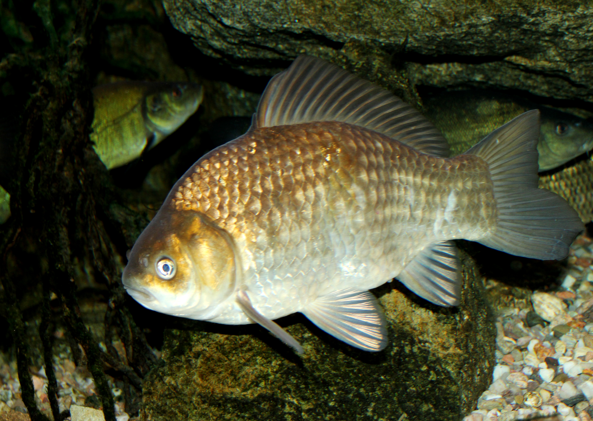

Występuje w Europie (z wyjątkiem zlewiska Oceanu Lodowatego, północnej Szkocji, Irlandii, zachodniej części Półwyspu Iberyjskiego, południowych i środkowych Włoch oraz zachodniej części Bałkanów) oraz w dorzeczach większych rzek syberyjskich aż po Lenę. Preferuje małe i płytkie zbiorniki wodne (starorzecza, glinianki, torfianki). W Polsce jest spotykany we wszystkich nizinnych wodach śródlądowych, stojących i wolno płynących, w miejscach o porośniętym roślinami podłożu. Przebywa niedaleko brzegów, przy miękkim i mulistym dnie. Niewielkie jego ilości są hodowane w gospodarstwach stawowych. Toleruje bardzo niską zawartość tlenu. Często w takich zbiornikach o wysokiej zawartości dwutlenku węgla i siarkowodoru tworzy formę karłowatą, która ma wysmukłe, wydłużone ciało i w wieku 8-10 lat osiąga zaledwie 9-10 cm długości.
Osiąga długość 40 (50) cm i masę 1 (2) kg. Ciało bardzo mocno wygrzbiecone i krótkie, pokryte dużymi, równo ułożonymi łuskami. Płetwa grzbietowa bardzo długa, sięga niemal do nasady trzonu ogonowego. Jej górna krawędź jest wypukła, a ostatni twardy promień piłkowany (około 30 ząbków), podobnie jak ostatni twardy promień płetwy odbytowej. Głowa nieduża, otwór gębowy mały, znajduje się na końcu pyska ustawiony nieco skośnie ku górze. Zęby gardłowe ustawione są w jednym szeregu. Grzbiet i boki brunatnozłociste z zielonkawym połyskiem, brzuch żółtawy lub biały. Płetwy piersiowe i brzuszne przy nasadzie są lekko zaczerwienione.
Tarło trwa od V do VII. Samica średniej wielkości składa kilkakrotnie ok. 200 000 jaj na płytkich miejscach, porośniętych wodnymi roślinami, do których się przykleja. Wylęg po 5-7 dniach.
Małe, ponieważ rośnie bardzo powoli. Często występuje w wielkich ilościach, ale osiąga bardzo niewielkie rozmiary i wówczas rybacy traktują go jako chwast rybny, mimo że jego mięso jest bardzo smaczne.
Wędkarski wagowy rekord Polski: 4,16 kg; 48,5 cm (2016).
